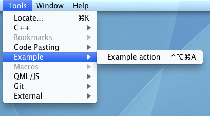

Creating Your First Plugin
This section describes how to create a Qt Creator plugin by using the plugin template provided by Qt Creator, and get the first impression of what a plugin consists of and what its general structure is.
Creating a Plugin Project
Qt Creator comes with a wizard for Qt Creator plugins, that creates a runable, minimal plugin for you. We strongly suggest that you use two different Qt Creator instances for developing and testing your plugin with. Otherwise your plugin will also be loaded in your development environment, which can make that unstable while your plugin is still unstable. You can just create a copy of your Qt Creator build and use one for actually developing, and the other for testing your plugin with.
You need to make sure that you use the same Qt Creator version that you want to develop for to create the plugin. Because of the Binary and Source Compatibility rules of Qt Creator, the Qt Creator plugin wizard creates a plugin that might only compile and run with the same Qt Creator version that it was created with.
- Select File > New File or Project > Library > Qt Creator Plugin > Choose.

The Introduction and Project Location dialog opens.

- Give your project a name and specify in which path this project will be created. The actual plugin's name can be different from the project name. You will choose that name later in the wizard. Continue to the next page.
The Kit Selection dialog opens.

- Select the kit to build and run your project with. For a Qt Creator plugin this needs to be a kit with Desktop device type, and a Qt version that is compatible with the Qt version that your Qt Creator was built with (in the best case the exact same build). If you use an incompatible Qt version to build your plugin, you will get errors while Qt Creator tries to load your plugin. Continue to the next page.
The Plugin Information dialog opens.

- In the Plugin name field, type Example. The name of the plugin is used as its identifier, and also is the base for the file names and classes in the code.
- The values of the following fields are mainly informational, and are shown in the detailed view in Qt Creator's plugin overview (Help > About Plugins, or Qt Creator > About Plugins on Mac).
- Vendor name is a short one-word name of the company or organization that created the plugin. This is also used for the path name where the plugin will be deployed to.
- Copyright is a one-line, short copyright string.
- License is a license text.
- Description is a short description of what the plugin does.
- URL is a website where the user can find more information about the plugin and/or organization providing it.
- Set the Qt Creator sources and Qt Creator build fields to the source and build directory of the Qt Creator instance you want to use to test your plugin with, respectively. If you don't do that correctly you will get compile errors for your plugin, and your plugin might not show up in Qt Creator at all.
- In the Deploy into list, select Qt Creator build. This sets your
.profile up to deploy your plugin directly into your Qt Creator build's plugin directory (requires you to have write permissions there). The other option, Local user settings, sets your.profile up to deploy your plugin into Qt Creator's user plugin path (for example~/.config/QtProject/qtcreator/pluginson Unix systems). We choose Qt Creator build because we use a self-compiled Qt Creator, and want the plugin to be only loaded by that Qt Creator instance. Continue to the next page.The Project Management dialog opens.

- Review the files that will be created, choose a version control system that Qt Creator should use for your project (always a good idea!), and finish the wizard.
Building and Running the Plugin
If you passed the correct Qt Creator source and build paths in the project wizard, your plugin should just build fine when pressing the build button. When you try to run your project, Qt Creator will ask you for the executable to run and you are presented the following dialog:

Select the path to the Qt Creator executable from the build that you specified in the Qt Creator build setting in the project wizard and click OK. Qt Creator starts up, and you can verify that your plugin successfully loaded by looking for a menu entry Tools > Example and by looking for the plugin in the About Plugins dialog.

File Structure
The plugin wizard creates a set of basic files that a plugin needs or should have. We will have a look at some of them in detail in the following sections, here is a short overview:
| File | Role |
|---|---|
Example.json.in | Plugin meta data template. QMake creates an Example.json from this file, which is compiled into the plugin as meta data. The meta data is read by Qt Creator to find out about the plugin. |
example.pro | Project file, used by QMake to generate a Makefile that then is used to build the plugin. |
example_global.h | Contains macro definitions that are useful when this plugin should export symbols to other plugins. |
exampleconstants.h | Header defining constants used by the plugin code. |
exampleplugin.h/.cpp | C++ header and source files that define the plugin class that will be instanciated and run by Qt Creator's plugin manager. |
qmake Project
The qmake project file example.pro defines how your plugin should be compiled. Qt Creator plugins need to have a specific setup there, in addition to telling qmake which files need to be compiled (or handled by moc or uic). Let us have a look at what the project wizard generated for you in detail.
DEFINES += EXAMPLE_LIBRARY
The first section of the .pro file lets the compiler pass an EXAMPLE_LIBRARY define to the compiled code, which is used in the example_global.h header, but is not really of interest for now. You should not need to change that section of the .pro file.
SOURCES += exampleplugin.cpp
HEADERS += exampleplugin.h \
example_global.h \
exampleconstants.h
This section tells qmake about the files of your project that it should let compile or otherwise handle. You need to expand that section with any files you add to the project.
## set the QTC_SOURCE environment variable to override the setting here QTCREATOR_SOURCES = $$(QTC_SOURCE) isEmpty(QTCREATOR_SOURCES):QTCREATOR_SOURCES=/Users/example/qtcreator-src ## set the QTC_BUILD environment variable to override the setting here IDE_BUILD_TREE = $$(QTC_BUILD) isEmpty(IDE_BUILD_TREE):IDE_BUILD_TREE=/Users/example/qtcreator-build
To compile and deploy your plugin, the project needs access to the Qt Creator sources and build. This section contains the logic that looks for the information about the location of the sources and build in the QTC_SOURCE and QTC_BUILD environment variables. If these are not defined, it uses the defaults you set in the project wizard.
So, if someone else opens your plugin project on their machine, they do not need to edit the .pro file, but instead they should set the QTC_SOURCE and QTC_BUILD environment variables correctly for the plugin's build environment.
You should not need to change this section, except perhaps to adapt the defaults.
## uncomment to build plugin into user config directory ## <localappdata>/plugins/<ideversion> ## where <localappdata> is e.g. ## "%LOCALAPPDATA%\QtProject\qtcreator" on Windows Vista and later ## "$XDG_DATA_HOME/data/QtProject/qtcreator" or "~/.local/share/data/QtProject/qtcreator" on Linux ## "~/Library/Application Support/QtProject/Qt Creator" on Mac # USE_USER_DESTDIR = yes
Qt Creator plugins can either be installed into the Qt Creator installation's plugin directory (requires write access there), or to a user specific plugin directory. The USE_USER_DESTDIR switch in the .pro file defines which method is used for building the plugin (which is independent from what you can later use for distributing your plugin to other users).
###### If the plugin can be depended upon by other plugins, this code needs to be outsourced to
###### <dirname>_dependencies.pri, where <dirname> is the name of the directory containing the
###### plugin's sources.
QTC_PLUGIN_NAME = Example
QTC_LIB_DEPENDS += \
# nothing here at this time
QTC_PLUGIN_DEPENDS += \
coreplugin
QTC_PLUGIN_RECOMMENDS += \
# optional plugin dependencies. nothing here at this time
###### End _dependencies.pri contents ######
This section defines the name and dependencies of your plugin. The QTC_PLUGIN_NAME variable defines the name of your plugin, and the name of the dynamic library that is created for it. The QTC_LIB_DEPENDS variable is a list of library names of the Qt Creator utility libraries that your plugin depends on. Typical values would be aggregation, extensionsystem and utils. The QTC_PLUGIN_DEPENDS variable defines the Qt Creator plugins that your plugin depends on. Almost all Qt Creator plugins will depend on the coreplugin. The QTC_PLUGIN_RECOMMENDS variable defines the Qt Creator plugins that your plugin optionally depends on. For more information, see Optional Dependencies.
include($$QTCREATOR_SOURCES/src/qtcreatorplugin.pri)
The included file qtcreatorplugin.pri makes sure that you build a plugin that is suitable for use in Qt Creator, by using the information you gave above.
For more information about qmake, and writing .pro files in general, see the qmake Manual.
Plugin Meta Data Template
The .json file is a JSON file that contains information that is needed by the plugin manager to find your plugin and resolve its dependencies before actually loading your plugin's library file. We will only have a short look at it here. For more information, see Plugin Meta Data.
The wizard doesn't actually create a .json file directly, but instead a .json.in file. qmake uses this to generate the actual plugin .json meta data file, replacing variables like QTCREATOR_VERSION with their actual values. Therefore you need to escape all backslashes and quotes in the .json.in file (i.e. you need to write \ to get a backslash and \" to get a quote in the generated plugin JSON meta data).
\"Name\" : \"Example\",
\"Version\" : \"0.0.1\",
\"CompatVersion\" : \"0.0.1\",
The first items in the meta data that is created by the wizard define the name of your plugin, its version, and with what version of this plugin the current version is binary compatible with.
\"Vendor\" : \"My Company\",
\"Copyright\" : \"(C) My Company\",
\"License\" : \"BSD\",
\"Category\" : \"Examples\",
\"Description\" : \"Minimal plugin example.\",
\"Url\" : \"http://www.mycompany.com\",
After that you'll find the information about the plugin that you gave in the project wizard.
$$dependencyList
The $$dependencyList variable is automatically replaced by the dependency information in QTC_PLUGIN_DEPENDS and QTC_PLUGIN_RECOMMENDS from your plugin's .pro file.
Plugin Class
The files exampleplugin.h and exampleplugin.cpp define the plugin implementation of your little plugin. We'll concentrate on some highlights here, and give pointers to more detailed information for the various parts.
Header File
The header file exampleplugin.h defines the interface of the plugin class.
namespace Example { namespace Internal {
The plugin is defined in a Example::Internal namespace, which conforms to the coding rules for namespacing in Qt Creator sources.
class ExamplePlugin : public ExtensionSystem::IPlugin { Q_OBJECT Q_PLUGIN_METADATA(IID "org.qt-project.Qt.QtCreatorPlugin" FILE "Example.json")
All Qt Creator plugins must be derived from ExtensionSystem::IPlugin and are QObjects. The Q_PLUGIN_METADATA macro is necessary to create a valid Qt plugin. The IID given in the macro must be org.qt-project.Qt.QtCreatorPlugin, to identify it as a Qt Creator plugin, and FILE must point to the plugin's meta data file as described in Plugin Meta Data.
bool initialize(const QStringList &arguments, QString *errorString);
void extensionsInitialized();
ShutdownFlag aboutToShutdown();
The base class defines basic functions that are called during the life cycle of a plugin, which are here implemented for your new plugin. These functions and their roles are described in detail in The Plugin Life Cycle.
private: void triggerAction();
The plugin has an additional custom slot, that is used to pop up a dialog when the user chooses the menu item that this plugin adds.
Source File
The source file contains the actual implementation of the plugin, which registers a new menu and menu item, and opens a message box when that item is triggered.
All the necessary header files from the plugin code itself, from the Core plugin, and from Qt are included in the beginning of the file. The setup of the menu and menu item is done in the plugin's initialize function, which is the first thing called after the plugin constructor. In that function, the plugin can be sure that the basic setup of plugin's that it depends on has been done, for example the Core plugin's ActionManager instance has been created.
For more information about implementing the plugin interface, see the ExtensionSystem::IPlugin API documentation and Plugin Life Cycle.
QAction *action = new QAction(tr("Example Action"), this);
Core::Command *cmd = Core::ActionManager::registerAction(action, Constants::ACTION_ID,
Core::Context(Core::Constants::C_GLOBAL));
cmd->setDefaultKeySequence(QKeySequence(tr("Ctrl+Alt+Meta+A")));
connect(action, &QAction::triggered, this, &ExamplePlugin::triggerAction);
This part of the code creates a new QAction, registers it as a new Command in the action manager, and connects it to the plugin's slot. The action manager provides a central place where the user can assign and change keyboard shortcuts, and manages cases where for example a menu item should be directed to different plugins under different circumstances, as well as a few other things. This is described in more detail in Menus and Menu Items.
Core::ActionContainer *menu = Core::ActionManager::createMenu(Constants::MENU_ID);
menu->menu()->setTitle(tr("Example"));
menu->addAction(cmd);
Core::ActionManager::actionContainer(Core::Constants::M_TOOLS)->addMenu(menu);
Here a new menu item is created, the created command added to it, and the menu added to the Tools menu in the menu bar. Again, this is covered in more detail in Menus and Menu Items.
void ExamplePlugin::triggerAction() { QMessageBox::information(Core::ICore::mainWindow(), tr("Action Triggered"), tr("This is an action from Example.")); }
This part defines the code that is called when the menu item is triggered. It uses the Qt API to open a message box that displays informative text and an OK button.